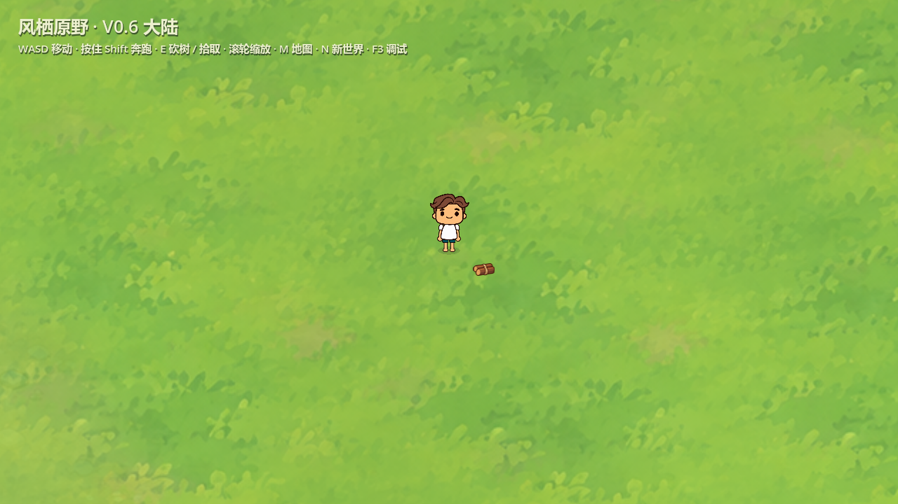
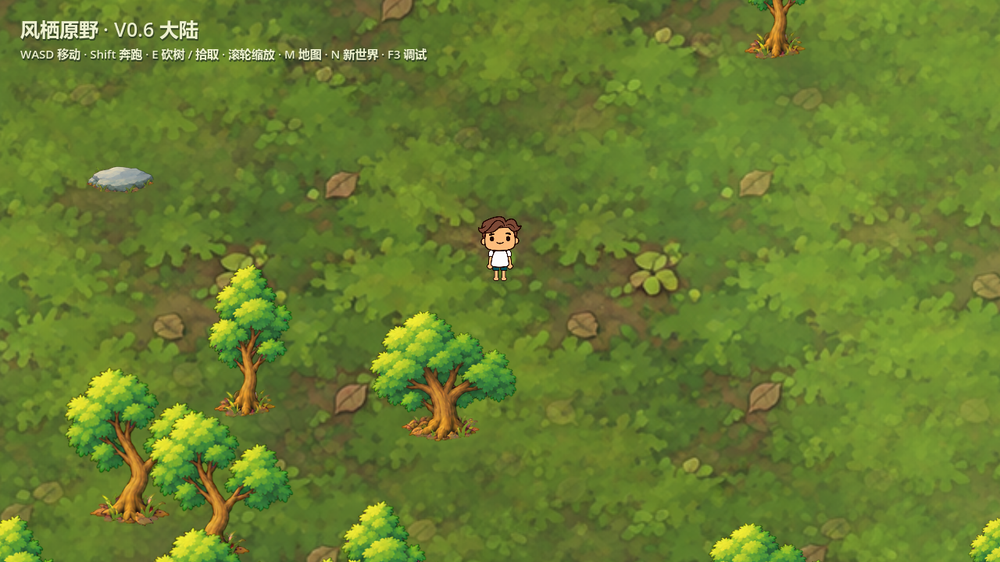
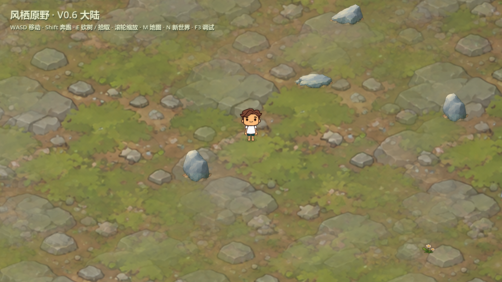
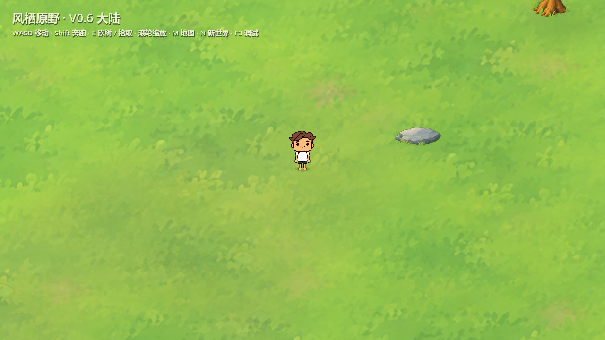
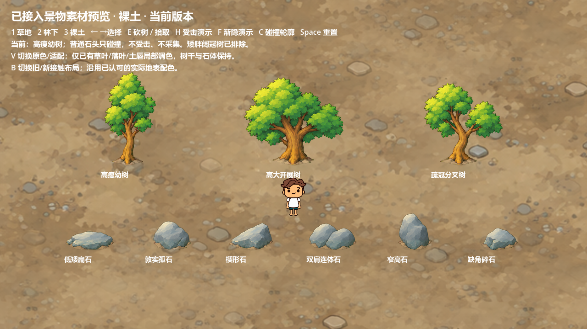
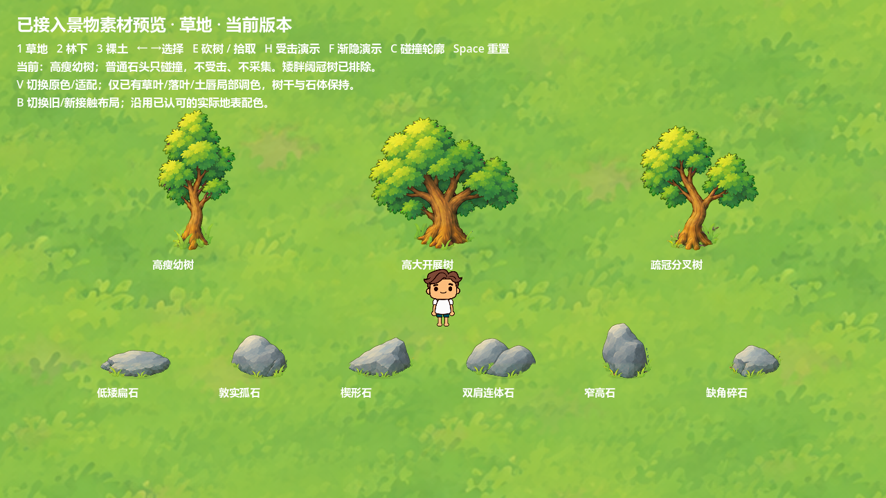
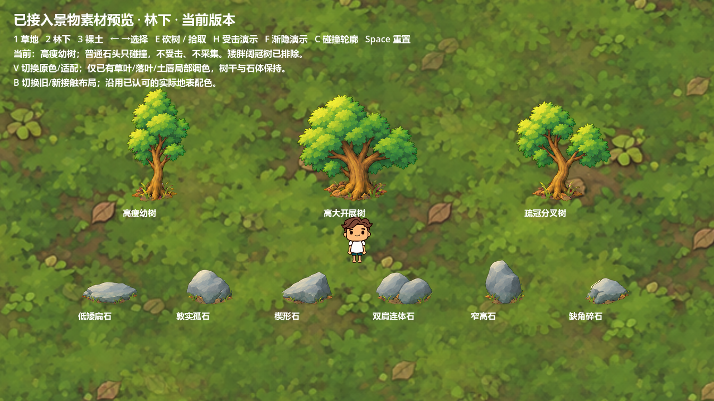

三种树、六种普通石头现已用于正式游戏。泥地统一恢复为之前连成一片的土边（dirt-02）；草地、林下保留本轮多组草叶与落叶。矮胖阔冠树不加入。
树受击只晃动，根部固定；砍完原地慢慢消失，无闪白。普通石头仅碰撞，不受击、不交互。用原来的 Start-Playtest.cmd 即可游玩。







Godot 4.7.2-stable (official) / NVIDIA GeForce RTX 5060：正式场景 1275 项检查及角色操作 22 项检查，均为零失败。包括九种造型、三类接触、逐种碰撞、区块重载复现、固定根部、无闪光、渐隐移除、掉落与主动拾取。单次运行采样最大区块安装 15.224ms，不代表帧率保证。
使用既有受控生成结果，本轮没有新图片生成；27张正式图哈希与选定整理结果一致，原主体上部不透明像素保留。连续泥土采用 dirt-02 原图，不做土块拆散清理。旧图与候选保留追溯。
大陆、地表、出生点和景物位置生成规则保持 windrest-continent-0.6.0；仅以Seed和物件位置确定新造型及地表接触，视觉版本 scene-contact-1.0.0。未新增玩法；未做全Seed压力测试或FPS基准。